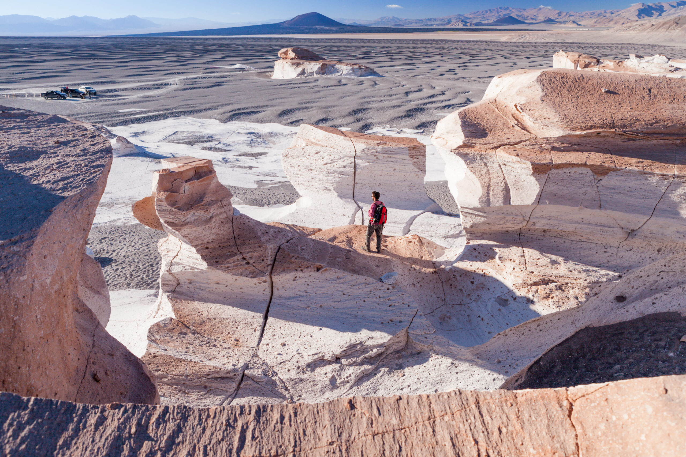

Catamarca
Campo de Piedra Pómez
Fiambala
Ruta ds Seismiles
Salar de Antofalla
Volcán Galan
Chaco
Lugares de Chaco
Corrientes
Lugares de Corrientes
Formosa
Lugares de Formosa
Jujuy
Lugares de Jujuy
La Rioja
Lugares de La Rioja
Misiones
Lugares de Misiones
Salta
Lugares de Salta
Santiago del Estero
Lugares de Santiago del Estero
Tucumán
Lugares de Tucumán